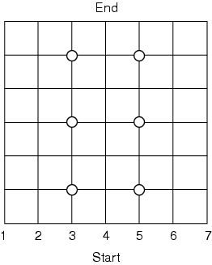

Dr. Ecco Solution
Solution to "DigThat!," DDJ, February 2005.
- 1. Six probes; see Figure. Because you know the direction of the roads as they leave an intersection, each pair on each row determines the fate of the pipe on that row and the next.
- 2. Six hours is the best, I think. You may be able to cut out early if a detour and a return to the central path has been detected, but this is not guaranteed.

Back to Article